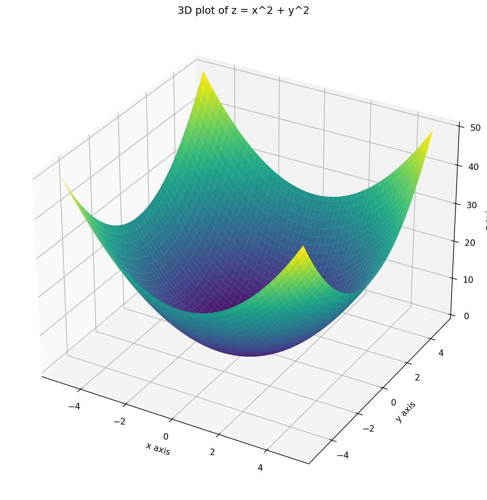
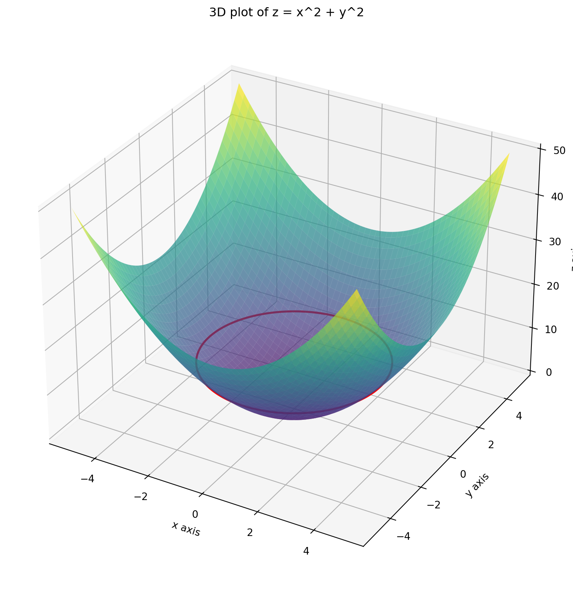
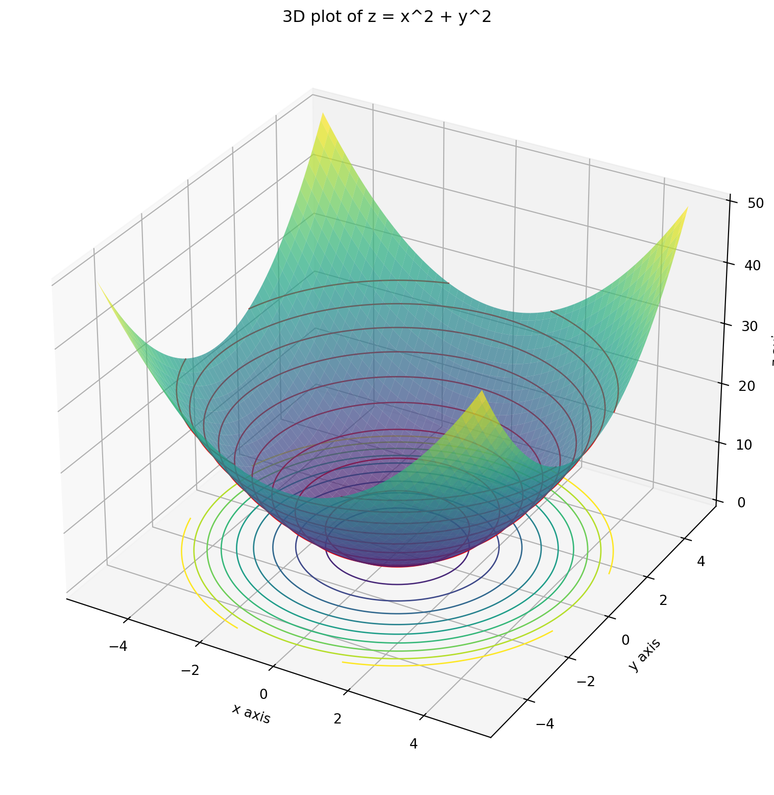
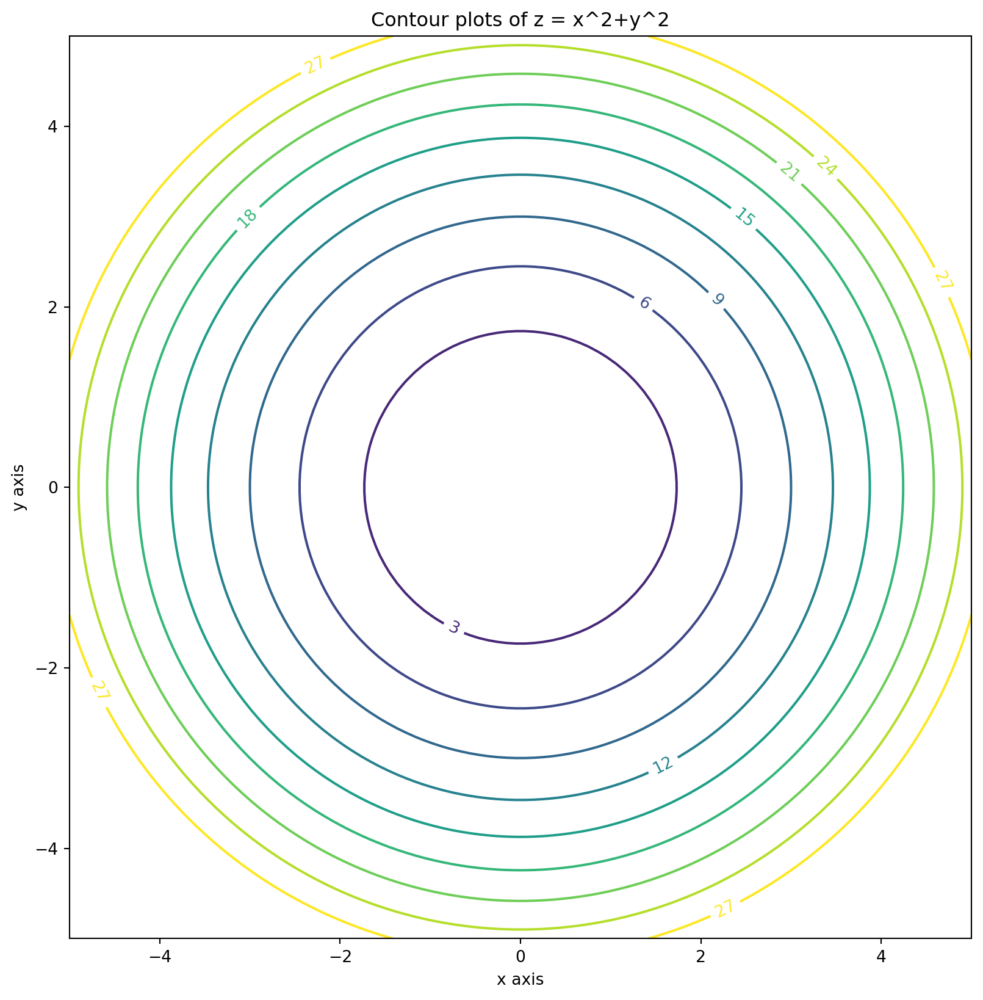
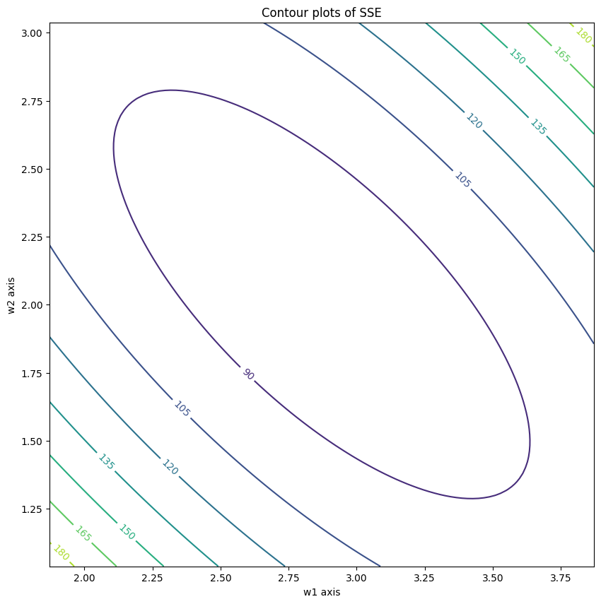

Code
import numpy as np
import matplotlib.pyplot as pltAnant Kumar
January 26, 2026
Visualizing functions of two variables can provide deep insights into their behavior. In this post, we will explore how to create 3D surface plots and contour plots using Python’s Matplotlib library. We will use the function \(z = x^2 + y^2\) as our example.
Conisder a two dimensional function \(f(x,y)\). To visualize the function, its graph can be plotted as follows: For each point \((x,y)\) on the \(xy\)-plane, evaluate the value of \(f\) and assign that value to a variable \(z\), so that \(z=f(x,y)\). In the 3D space, the graph \(z=f(x,y)\) gives a surface. For example, consider the function \(f(x,y) = x^2+y^2\). Let’s plot the surface \[ z=x^2+y^2 \]
from mpl_toolkits.mplot3d import Axes3D
# Create gridpoints
x = np.linspace(-5,5,100)
y = np.linspace(-5,5,100)
X,Y = np.meshgrid(x,y)
# Create figure
fig = plt.figure(figsize=(10,10))
ax = fig.add_subplot(111, projection='3d')
# Plot the surface
ax.plot_surface(X, Y, f(X, Y), cmap='viridis')
# Set labels
ax.set_xlabel('x axis')
ax.set_ylabel('y axis')
ax.set_zlabel('z axis')
ax.set_title('3D plot of z = x^2 + y^2')
# Show the plot
plt.show()
A level curve of the function \(f(x,y)\) is a curve showing the set of points where the function has a constant value.
In the above example, suppose we need the level curve where \(f(x,y) =10\). This will be obtained as the intersection of the surface \(z=x^2 + y^2\) with the plane \(z=10\).
Z= f(X,Y)
# Create a figure and a 3D axis
fig = plt.figure(figsize=(10, 10))
# 3D plot for the surface
ax = fig.add_subplot(111, projection='3d')
# Plot the surface slightly translucent
ax.plot_surface(X, Y, Z, cmap='viridis', alpha=0.7)
# Plot the contour (level curve) for z = 10 on the surface
ax.contour(X, Y,Z, levels=[10], colors='r', linewidths=2)
# Set labels for 3D plot
ax.set_xlabel('x axis')
ax.set_ylabel('y axis')
ax.set_zlabel('z axis')
ax.set_title('3D plot of z = x^2 + y^2')
# Show the plots
plt.show()
If the level curves are drawn at regular intervals of the \(z\) coordinates, we shall obtain many such circles whose centers are located on the \(z\) axis and are equal spaced along it.
# Create a figure and a 3D axis
fig = plt.figure(figsize=(10, 10))
# 3D plot for the surface
ax = fig.add_subplot(111, projection='3d')
# Plot the surface slightly translucent
ax.plot_surface(X, Y, Z, cmap='viridis', alpha=0.7)
# Plot the contour (level curve) for z = 10 on the surface
ax.contour(X, Y,Z, levels=[3*k for k in range(0, 10)], colors='r', linewidths=1)
# Set labels for 3D plot
ax.set_xlabel('x axis')
ax.set_ylabel('y axis')
ax.set_zlabel('z axis')
ax.set_title('3D plot of z = x^2 + y^2')
# Show the plots
plt.show()If these level curves are projected back on the \(xy\) plane, we get the contour plots. In our case, they will be circels. However, as the surface on which the level curves are present is curved, the contours projected on the \(xy\) plane will not be equally spaced.
# Create a figure and a 3D axis
fig = plt.figure(figsize=(10, 10))
# 3D plot for the surface
ax = fig.add_subplot(111, projection='3d')
# Plot the surface slightly translucent
ax.plot_surface(X, Y, Z, cmap='viridis', alpha=0.7)
# Plot the contour (level curve) for various values of z on the surface
ax.contour(X, Y,Z, levels=[3*k for k in range(0, 10)], colors='r', linewidths=1)
# Project the contours onto the xy-plane at z=0
ax.contour(X, Y, Z, levels=[3*k for k in range(0, 10)], linewidths=1, offset=0)
# Set labels for 3D plot
ax.set_xlabel('x axis')
ax.set_ylabel('y axis')
ax.set_zlabel('z axis')
ax.set_title('3D plot of z = x^2 + y^2')
# Show the plots
plt.show()
If you just see these contours on the \(xy\) plane, they still give an idea as to how the function behaves.

For ease of visualization, let’s consider a 2D dataset which has \(n\) datapoints each having two features, say \(x_1\), \(x_2\). The numerical values of these features for the \(i\)-th vector \(\mathbf{x}_i\) are denoted as \(x_{1i}\) and \(x_{2i}\). The label for \(\mathbf{x}_i\) is \(y_i\). The linear regression model is \[ f(\mathbf{w}, \mathbf{x}) = \mathbf{w}^T \mathbf{x} = w_1 x_1 + w_2 x_2 \] where \(\mathbf{w} = \begin{bmatrix} w_1 \\ w_2 \end{bmatrix}\) is the weight vector which needs to be chosen so that the sum of the squared errors (SSE) is minimized. The error for the \(i\)-th datapoint is \[ \mathbf{w}^T \mathbf{x}_i - y_i = w_1 x_{1i} + w_2 x_{2i} - y_i \] (I have removed the intercept term as it will make the loss function a three variable function which will be difficult to visualize).
As such the SSE is \[ L(w_1, w_2) = \sum_{i=1}^n (w_1x_{1i} + w_2 x_{2i}-y_i)^2 \] Using the expansion formula \[ (a+b+c)^2 = a^2 +b^2 +c^2 + 2ab +2bc + 2ca \] we get \[ L(w_1, w_2) = \sum_{i=1}^n (w_1^2 x_{1i}^2 + w_2^2 x_{2i}^2 + y_i^2 + 2w_1 w_2 x_{1i} x_{2i} - 2 w_1 x_{1i} y_i - 2 w_2 x_{2i} y_i) \] As \(w_1\), \(w_2\) do not depend on the index \(i\), the loss function becomes \[ L(w_1, w_2) = w_1^2 \sum_{i=1}^n x_{1i}^2 + w_2^2 \sum_{i=1}^n x_{2i}^2 + \sum_{i=1}^n y_i^2 + 2w_1 w_2 \sum_{i=1}^n x_{1i} x_{2i} - 2 w_1 \sum_{i=1}^n x_{1i} y_i - 2 w_2 \sum_{i=1}^n x_{2i} y_i \] Notice that each of the sums above are constants depending on the dataset. As the SSE is a quadratic function in \(w_1\), \(w_2\) of the form \[ L(w_1, w_2) = a w_1^2 + b w_2^2 + 2h w_1 w_2 + 2g w_1 + 2f w_2 + c \\ \] where $a = {i=1}^n x{1i}^2 $, \(b = \sum_{i=1}^n x_{2i}^2\), $h = {i=1}^n x{1i} x_{2i} $, $ g = - {i=1}^n x{1i}y_i$, $ f = - {i=1}^n x{2i}y_i$ and \(c = \sum_{i=1}^n y_i^2\).
The contour plots are equations of the form \[ a w_1^2 + b w_2^2 + 2h w_1 w_2 + 2g w_1 + 2f w_2 + c = z \] for some real constant \(z\). These equations, in general, represent conic sections. In fact, because of Cauchy-Schwarz inequality, \(h^2 -ab \le 0\), hence the conic section is an ellipse (if \(h^2 -ab <0\)) or a parabola (if \(h^2=ab\)).
Let us try to visualize SSE contours with a toy dataset.
# Create gridpoints centered about (xc, yc)
if a*b - h*h != 0:
xc, yc = find_center(a,b,h,g,f,c)
x = np.linspace(xc-1,xc+1,100)
y = np.linspace(yc-1,yc+1,100)
x,y = np.meshgrid(x,y)
else:
x = np.linspace(1,4,100)
y = np.linspace(1,4,100)
x,y = np.meshgrid(x,y)
z = SSE(x,y)
fig, ax = plt.subplots(figsize=(10,10))
contours = ax.contour(x, y, z)
ax.clabel(contours, inline=True, fontsize=10)
ax.set_xlabel('w1 axis')
ax.set_ylabel('w2 axis')
ax.set_title('Contour plots of SSE')
ax.set_aspect('equal')
plt.show()